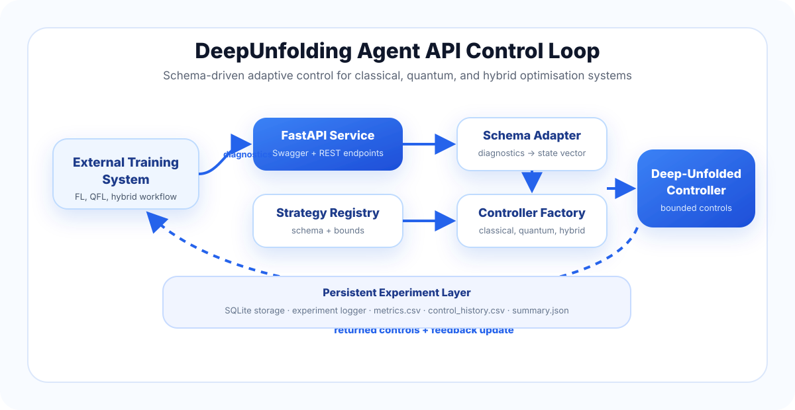

Latest News
- DeepUnfolding Agent prepared as a public API-based adaptive controller framework.
- Classical, quantum, and hybrid controller pathways integrated under a common schema interface.
- GitHub Pages project website released.
Abstract
DeepUnfolding Agent is a strategy-agnostic adaptive controller framework that exposes deep-unfolded control logic through an API boundary. Rather than embedding adaptation inside a model optimiser, the agent observes runtime diagnostics from an external optimisation process and returns bounded control variables.
The framework supports classical, quantum, and hybrid settings. It can adapt variables such as learning rate, proximal strength, local epochs, quantum parameter learning rate, shot count, circuit depth, entanglement depth, and measurement reuse. This interface allows external systems to register their own strategy schemas while reusing a common controller backend.
Core Idea
Treat adaptive control as a reusable agent that is external to the training system but coupled through diagnostics, bounded controls, and feedback updates.
Key Contributions
Strategy Schema
A declarative schema specifies state variables, control variables, data types, and admissible bounds.
Controller API
A FastAPI service exposes registration, controller creation, control suggestion, update, and experiment endpoints.
Deep-Unfolded Backend
Learnable multi-step control logic adapts strategy-level variables across repeated optimisation rounds.
System Architecture
The external training system sends diagnostics to the controller service. The strategy registry and schema adapter convert diagnostics into an ordered state representation. The controller backend predicts bounded controls, which are applied by the external system in the next optimisation round. Feedback is then used to update the controller.

API Interface
The public API exposes endpoints for health checks, strategy registration, controller creation, control suggestion, controller update, quantum controlled-round execution, and experiment retrieval.
GET /health
GET /strategies
POST /strategies/register
POST /controllers/create
POST /controllers/{controller_id}/suggest-controls
POST /controllers/{controller_id}/update-controller
POST /quantum/run-controlled-round
GET /experiments/{run_id}Basic Usage
Run locally
uvicorn app.main:app --reloadOpen Swagger UI
http://127.0.0.1:8000/docsBuild Docker image
docker build -t deepunfolding-agent-api:0.1.0 .Run Docker container
docker run -p 8000:8000 deepunfolding-agent-api:0.1.0Dataset
Add the final dataset link here after you decide where to host the public benchmark data. Recommended options are Hugging Face Datasets, Zenodo, or an institutional repository.
Current placeholder link in the top button points to this section. Replace it with the final dataset URL when available.
Results
Add compact benchmark plots here, such as fixed-versus-controlled validation loss, control trajectories, quantum shot/circuit-depth adaptation, and communication-performance trade-off curves.
Citation
@article{nanayakkara2026deepunfoldingagent,
title = {DeepUnfolding Agent: A Strategy-Agnostic API Framework for Adaptive Classical, Quantum, and Hybrid Optimisation},
author = {Nanayakkara, Shanika Iroshi, Shiva Raj Pokhrel},
year = {2026}
}